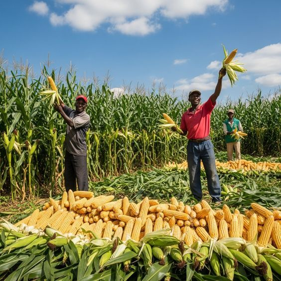
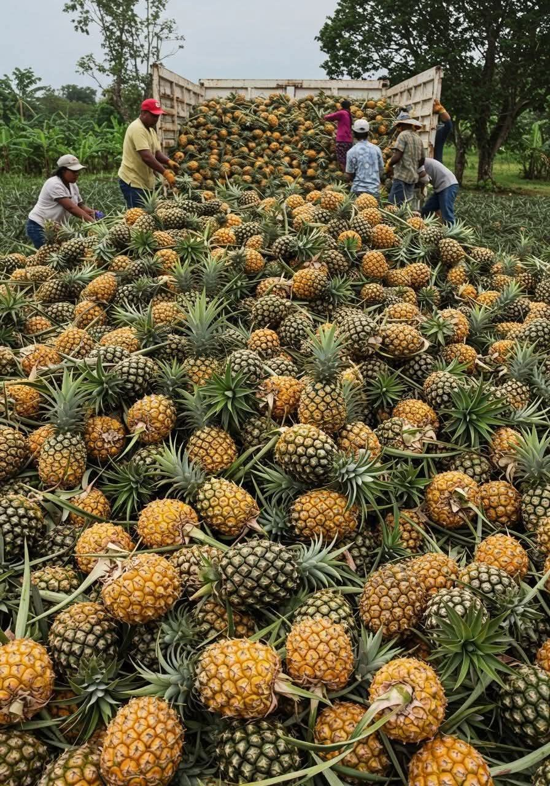
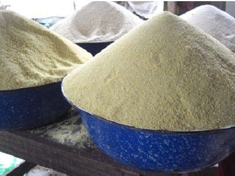
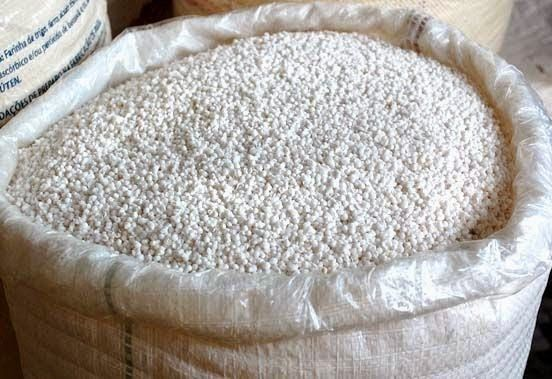
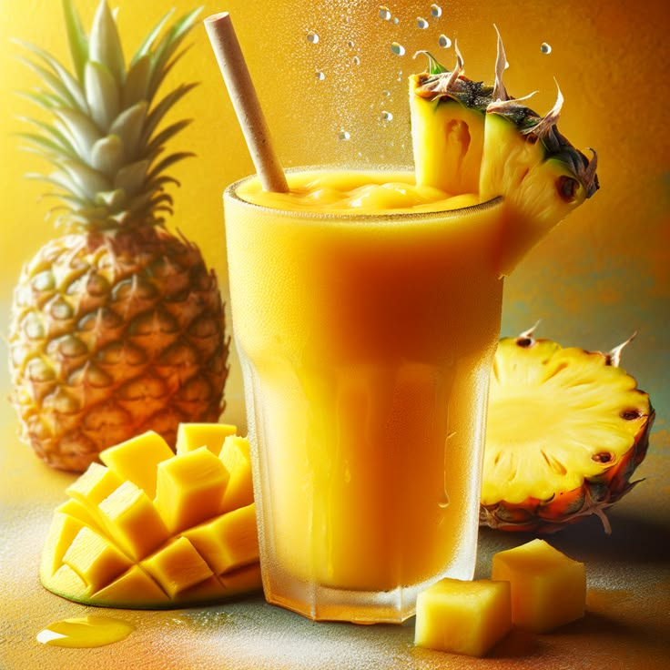
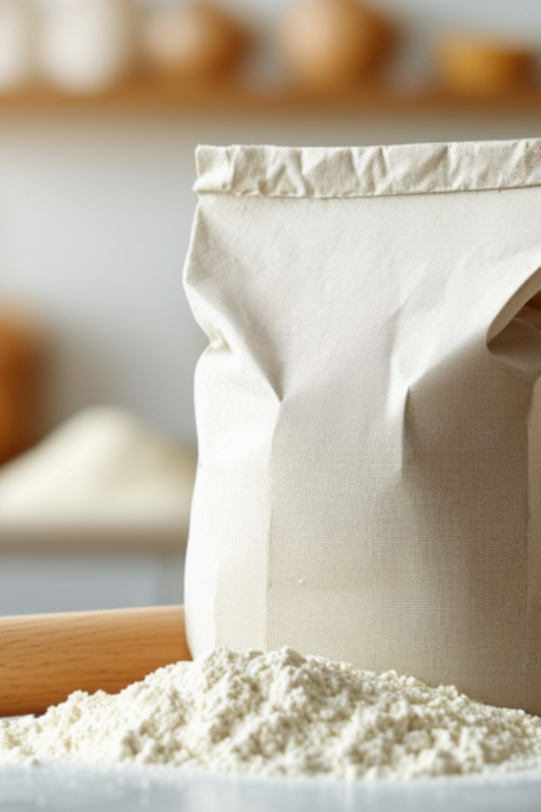
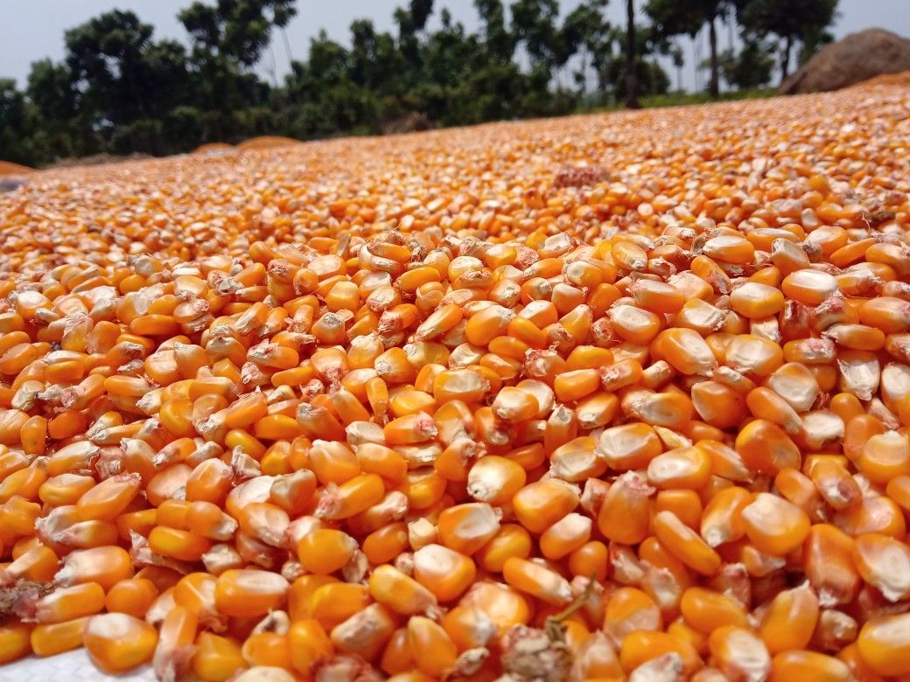

Nos cultivations
Des produits du terroir togolais, cultivés avec passion et respect
Filtrer par catégorie

Maïs Jaune des Plateaux
Variété locale adaptée aux climats togolais, riche en protéines et idéal pour la préparation de pâte traditionnelle.
Céréales
Manioc Doux Coastal
Cultivé sur les terres sablonneuses de la région Maritime, faible en cyanure et excellent pour la consommation directe.
Tubercules
Ananas Victoria Togo
Variété locale reconnue pour sa chair juteuse et son taux élevé de sucre naturel, récolté à maturité parfaite.
Fruits
Gari Artisanal Premium
Semoule de manioc fermentée selon la méthode traditionnelle, toastée au feu de bois pour un goût authentique.
Transformés
Tapioca de Manioc
Farine extra-fine obtenue par séchage solaire, sans additifs, parfaite pour bouillies et pâtisseries locales.
Transformés
Nectar d'Ananas 100%
Jus pressé à froid, pasteurisé naturellement, sans sucre ajouté ni conservateur, conditionné dans nos ateliers locaux.
Transformés
Farine de Maïs Blanc
Moulue sur pierre pour conserver le germe, riche en fibres et nutriments, idéale pour akplé et tokpa.
Transformés
Maïs Grain Sélection
Grains triés à la main, séchés au soleil, conservés dans nos greniers traditionnels pour une qualité optimale.
Céréales